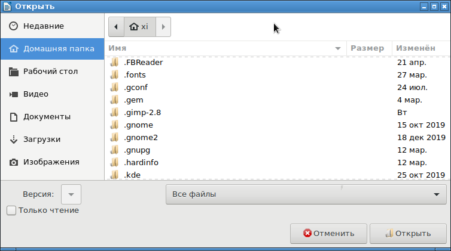
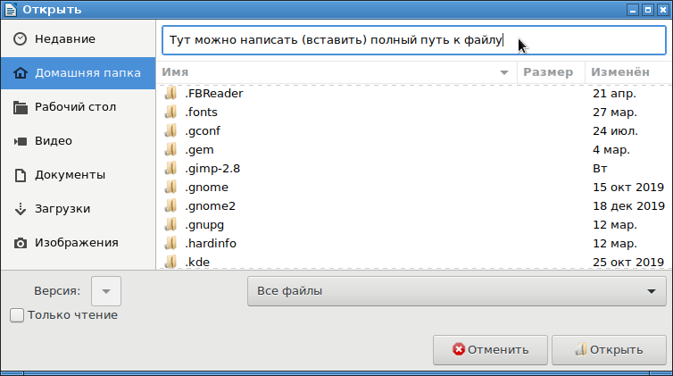

С некоторых пор, в Libre Office отключено системное окно открытия файла, и вместо него открывается собственное окно со встроенным в Libro Office диалогом выбора файла. Такое окно выбра файла - это полная копия стандартного диалога открытия файла в GTK3. Такой же диалог открытия файла используется, например, в браузере Mozilla Firefox и в векторном графическом редакторе Inkscape.
Проблема этого окна в том, что на нем зачем-то скрыта строка полного пути к файлу, и нет графических инструментов, что бы данную строку показать. Таким образом, имея полный путь к открываемому файлу, невозможно вставить его в диалоге открытия файла и быстро его открыть. Пользователь вынужден вручную "протыкивать" мышкой весь путь до открываемого файла.

Однако, в данном окне есть волшебное сочетание клавиш Ctrl+L. О нем нигде в документации не написано, но оно есть. При его нажатии, в верхней части окна выбора файла появится обычное текстовое поле ввода пути к файлу:

Кстати, это же сочетание клавиш в диалоге открытия файла работает и в Mozilla Firefox и в Inkscape!